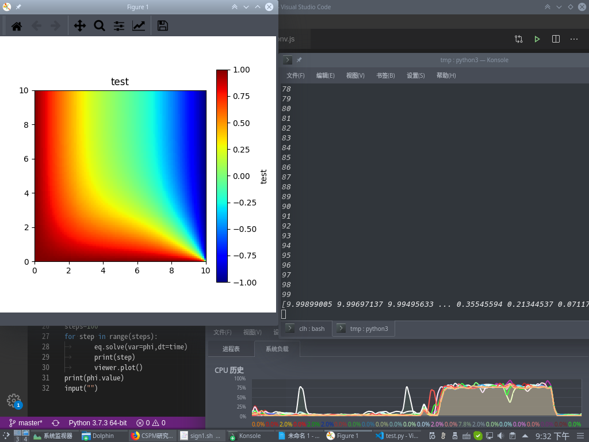

热传导方程的数值模拟¶
文档元数据
作者：Chen Longhao
创建时间：2020年6月25日
热传导方程（或称热方程）是一个重要的偏微分方程，它描述一个区域内的温度如何随时间变化 其完整形式为：
\[u_t = k \triangle u\]
注解
\(\triangle\) 为拉普拉斯算子
现在我们使用fipy对其进行数值求解
完整的程序如下：
import fipy as fp
nx=100 #dx的个数
ny=100 #dy的个数
dx=0.1
dy=dx
mesh=fp.Grid2D(dx=dx,dy=dy,nx=nx,ny=ny)
phi=fp.CellVariable(mesh,name="test",value=5.) #value为初始温度
D=1 #即为方程中的k
eq=fp.TransientTerm()==fp.DiffusionTerm(coeff=D) #方程
#温度
T1=10
T2=0
#设置边界条件
phi.constrain(T2,mesh.facesRight)
phi.constrain(T1,mesh.facesLeft)
phi.constrain(T1,mesh.facesBottom)
viewer=fp.Viewer(vars=phi, datamin=0., datamax=10.)
viewer.plot()
time= 10 * 0.8 * dx**2 / (2 * D)
steps=100
for step in range(steps):
eq.solve(var=phi,dt=time)
print(step)
viewer.plot()
print(phi.value) #打印最后结果
input("")
最后结果：
